Proposal memo
A new intervention placed for institutional consideration.
GOVERNANCE · PROGRAMME MANAGEMENT · FIELD IMPLEMENTATION
Managing social-impact projects across the full implementation cycle.
NAZMUS SAKIB / CURRENT WORK
Project decisions eventually have to work outside the meeting room.
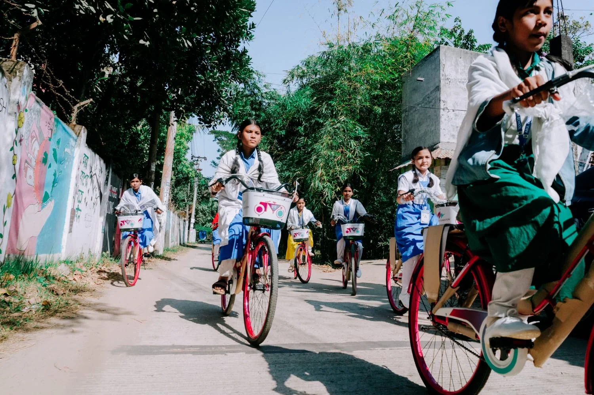
Mobility becomes part of the education intervention when distance is a barrier.
Before the launch.
At the point of delivery.
After the field visit.
My work with MTB Foundation sits at the intersection of governance, programme management and field implementation.
A project becomes visible when a student receives a bicycle, an assistive device is delivered, a Water Access Hub opens or a family receives housing support. The work begins earlier, through need identification, partner review, appraisal and institutional preparation.
It continues through monitoring, payment follow-up, documentation and reporting, with renewal or scale-up considered where appropriate. This is ongoing work I continue to carry forward.
01 / BEFORE THE FIELD
A project can begin with a community need, a Board or management direction, a partner proposal, field evidence or an opportunity to extend an existing programme.
My responsibilities involve helping move those starting points into a defined intervention, with a clear rationale, delivery model and follow-up process.
The work begins with
the questions behind the project.
02 / THE PROJECT LIFECYCLE
Community need, Foundation priority, programme expansion or strategic opportunity.
EOI, NGO research, institutional outreach and technical expertise.
Rationale, beneficiaries, budget, activities, timeline and sustainability.
Internal review, relevant alignment, approval pathway and project papers.
MoA, disbursement conditions, field planning and local coordination.
Programme launch, delivery, infrastructure and beneficiary engagement.
Field checks, partner reports, end-use evidence and progress follow-up.
Management updates, BoG papers, impact documentation and next decisions.
03 / FINDING THE RIGHT PARTNER
Implementation depends on the partner’s experience, technical capability, field presence and institutional capacity.
I research and coordinate with NGOs, institutions and specialist organisations, review proposals and help clarify the implementation pathway around a defined social outcome.
04 / TURNING PROPOSALS INTO DECISIONS
I contribute to preparing and reviewing the institutional documents through which Foundation projects move toward approval. The document and pathway depend on the matter under consideration.
A new intervention placed for institutional consideration.
Matters considered between scheduled meetings through the appropriate process.
An action requiring subsequent formal acknowledgement or ratification.
Eligible cases placed before the relevant authority following an appropriate prior pathway.
Continuation, additional beneficiaries, locations or a revised phase.
The Board of Governors is MTB Foundation’s principal governance and approval body. Management carries approved initiatives into implementation through coordination, documentation and reporting. My contribution supports those institutional processes.
05 / PLANNING THE FIELD
Planning connects the implementing partner, project location, intended beneficiaries, the purpose of the visit and the relevant MTB branch or sub-branch.
A visit may verify implementation, review infrastructure, meet beneficiaries, document outcomes, identify issues or establish follow-up actions.
06 / IMPLEMENTATION / EDUCATION + MOBILITY
Mobility becomes part of the education intervention when distance is a barrier.
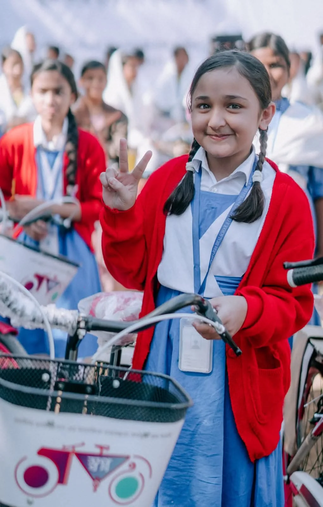
An individual moment within a wider education and mobility programme.
Swapno Sarathi supports underprivileged, meritorious female students by providing bicycles that make travel to and from school easier. Distance becomes part of the education-access question.
My work around programmes such as this connects proposal and approval documentation with coordination, field planning, stakeholder engagement, delivery and subsequent reporting.
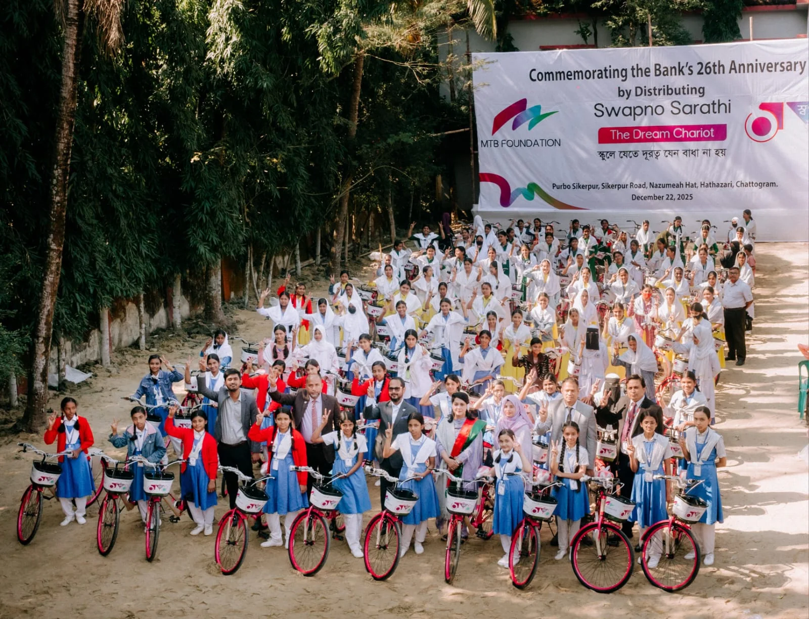
Foundation colleagues and students gathered with the distributed bicycles.
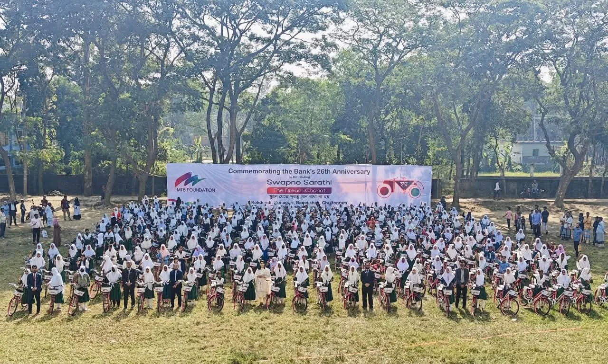
A wider view of a Swapno Sarathi bicycle distribution.
07 / DELIVERY IS A HUMAN MOMENT
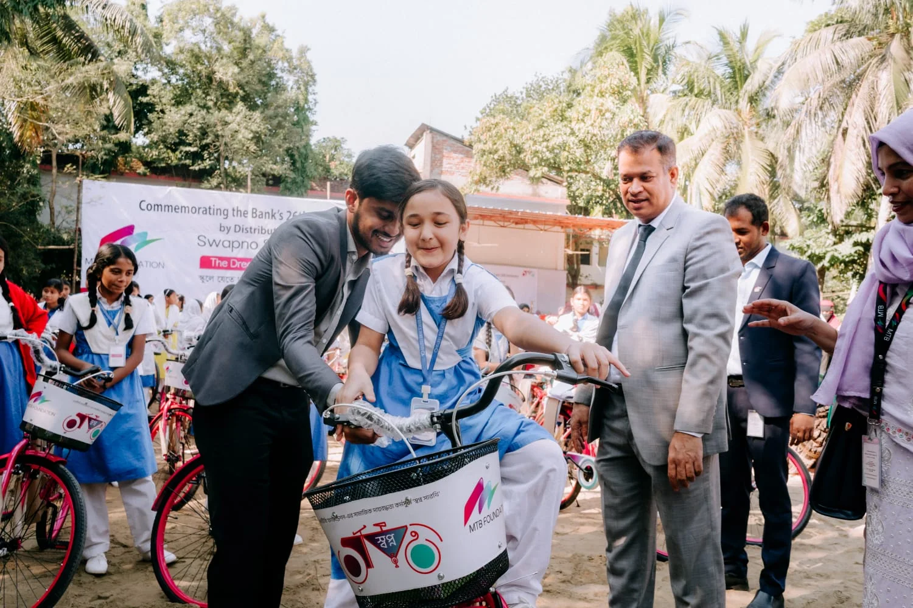
Supporting programme delivery on the ground during a Swapno Sarathi bicycle distribution.
Supporting programme delivery on the ground during a Swapno Sarathi bicycle distribution.
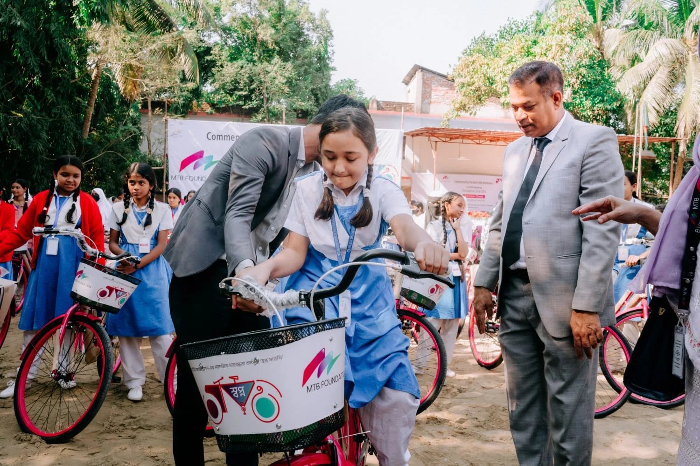
Another moment from field delivery ↗08 / DISABILITY INCLUSION
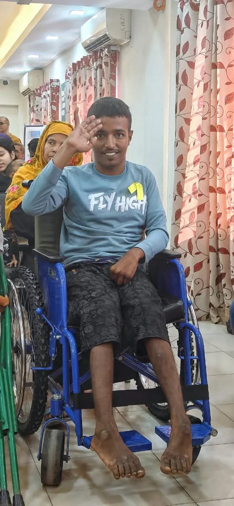
Assistive support designed around mobility, accessibility and participation.
MTB Foundation works with specialised organisations on programmes supporting persons with disabilities, including assistive devices and accessibility support.
My contribution connects the project-management and documentation process with engagement at implementation level.
Assistive support has to respond to the practical needs of the person receiving it.
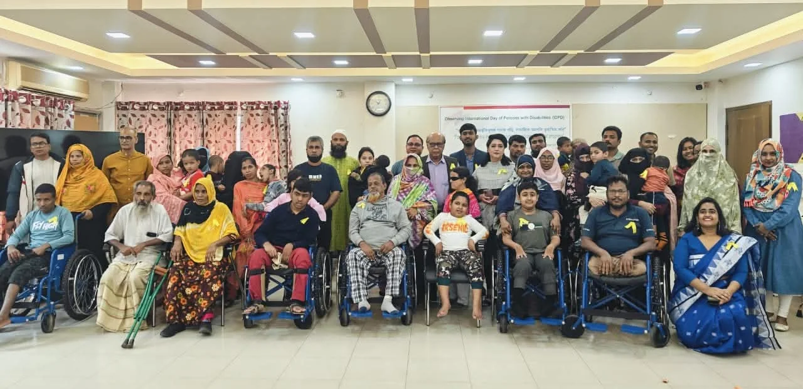
Programme participants, families and the wider implementation team.
09 / WATER, SANITATION + DIGNITY
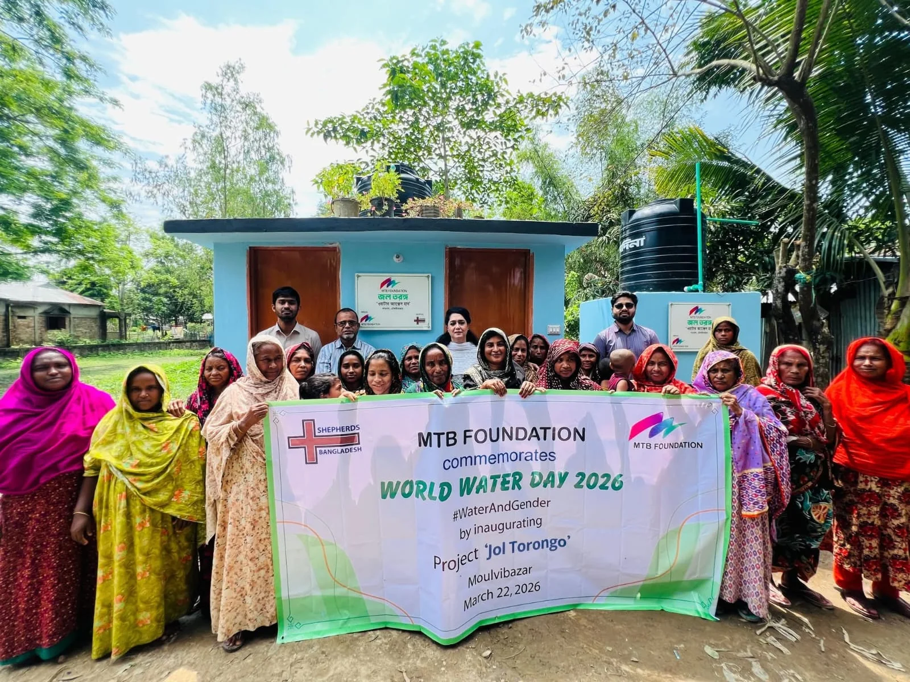
Safe water and sanitation as a community-level social investment.
Jol Torongo works to improve safe drinking water and sanitation access for underserved communities. The programme with Shepherds Bangladesh includes Water Access Hubs in Moulvibazar.
The work around infrastructure involves partner coordination, community participation, implementation checks and follow-up after delivery. A functioning facility is the point at which planning becomes practical access.
10 / LIVELIHOODS
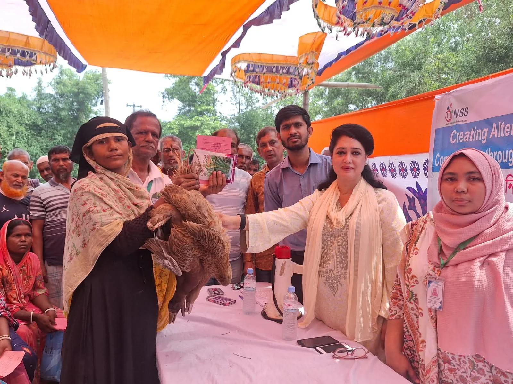
Productive asset delivery, beneficiary engagement and follow-up.
Livelihood interventions can support households through productive assets, creating a basis for income-generating activity.
The project-management questions extend from selection and delivery into continuity:
11 / SHELTER + ENVIRONMENT
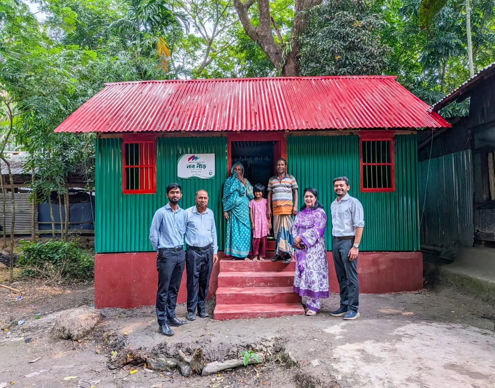
Reviewing a community-level housing intervention with the family and local stakeholders.
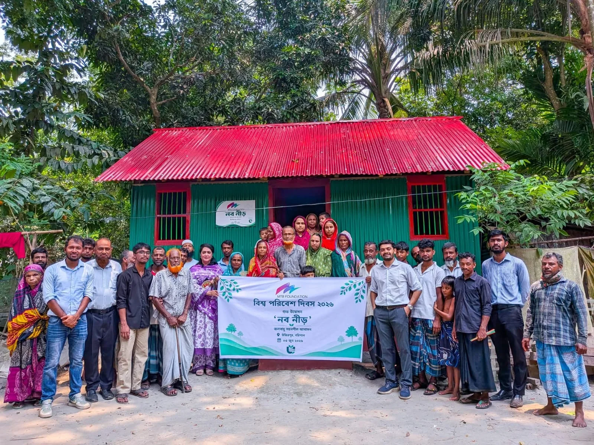
World Environment Day connected to the Nobo Neer housing initiative.
Nobo Neer is a housing initiative in Guthia, Ujirpur, Barishal. Field engagement connects the visible structure with the people and implementation process behind it.
12 / HEALTHCARE OUTREACH
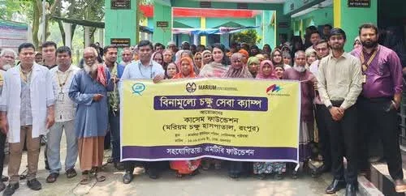
Working with local and technical partners to support community access.
Healthcare projects connect technical providers, beneficiaries, local institutions and Foundation teams.
Programme management involves coordination around access, partner implementation, relevant treatment or referral pathways, documentation and reporting.
13 / PROGRAMME ACTIVATION
Launches and flag-off ceremonies bring approved initiatives into an active implementation phase, particularly where several stakeholders and a defined journey are involved.
The Sultana’s Dream Unbound flag-off is shown here as programme activation and institutional coordination.
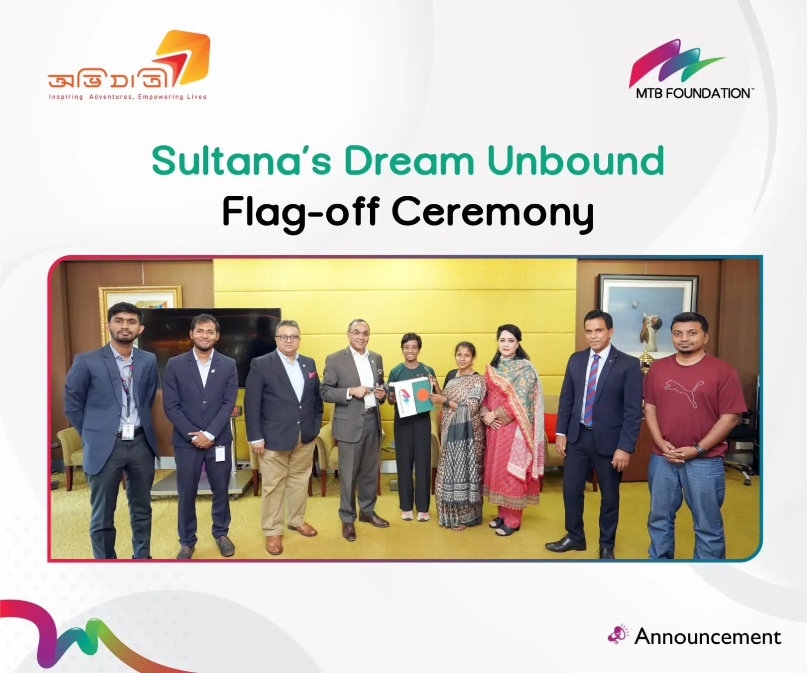
Sultana’s Dream Unbound: moving a programme into implementation.
14 / DAYS AS PROGRAMME MOMENTS
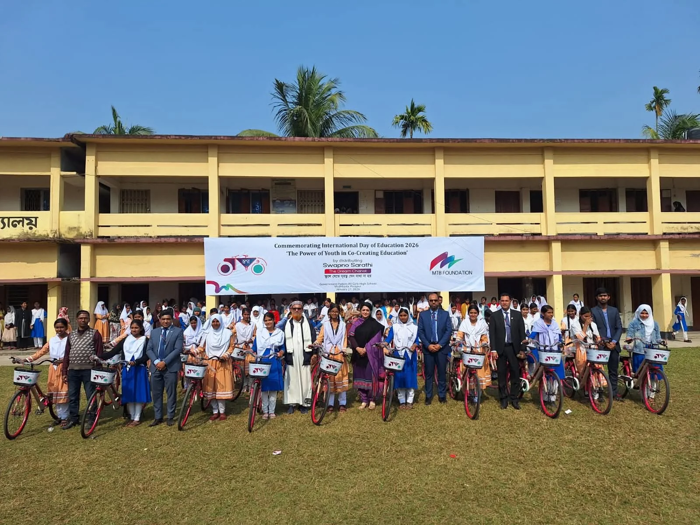
International Day of Education connected to practical programme delivery.
15 / MONITORING AFTER DELIVERY
Follow-up continues after implementation. My work may involve reviewing whether activities were completed, approved funds reached the partner, intended support reached beneficiaries and required records were submitted.
Project decisions eventually have to work outside the meeting room.
16 / BRANCH + PARTNER COORDINATION
Programme oversight, institutional coordination and approval processes.
Technical delivery and field implementation.
Local coordination, context and monitoring support.
Beneficiaries and local stakeholders.
Outside Dhaka, local MTB teams can add context, facilitate coordination and provide another point of visibility for implementation follow-up.
17 / FROM FIELD NOTES TO MANAGEMENT INFORMATION
I prepare or support the documents and communications that bring implementation information back into management and governance systems.
The reporting process connects field observations, delivery records and partner updates with the next institutional decision.
FIELD EVIDENCE → STRUCTURED INFORMATION → MANAGEMENT DECISION
18 / MY ROLE
Identify needs, structure interventions and support the programme pipeline.
Engage NGOs, institutions and technical partners around project development.
Review rationale, beneficiaries, budgets, activities and monitoring arrangements.
Prepare project papers and approval documentation for the appropriate pathway.
Coordinate visits, delivery events, partners and relevant MTB teams.
Support launches, beneficiary delivery and stakeholder engagement.
Review progress, follow up funding and collect implementation evidence.
Translate project information into management, Board, regulatory and impact formats.
19 / THE CORE CAPABILITY
My role connects how an intervention moves from institutional preparation to delivery on the ground, and how the evidence returns to inform the next decision.
20 / SELECTED FIELD WORK
PROFESSIONAL PRACTICE SNAPSHOT
I continue to work across MTB Foundation’s social-impact project cycle, connecting project development and institutional documentation with partner coordination, field implementation, monitoring and reporting.
For me, each delivery leads into follow-up. Field observations become documentation, documentation informs the next decision, and the next decision shapes the next phase of work. This portfolio will continue to grow alongside that ongoing practice.